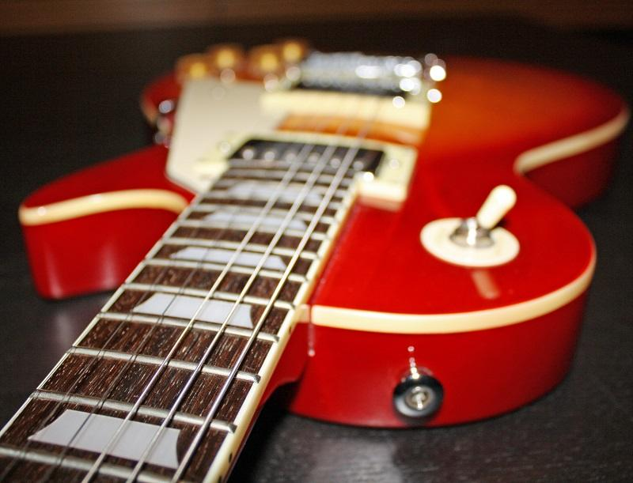

 <div *ngIf = "tasks?.length > 0; else noTasks">
       <ul *ngFor="let task of tasks" class="collection">
         <li class="collection-item avatar">
          <!--       -->
           <span class="title flow-text"><strong>{{task.title}}</strong></span>
            <p class="">{{task.description}}</p><br>
         </li>
       </ul>  

       <ng-template #noTasks>
          <h5> there is not notes.</h5>
        </ng-template>

 </div>
 
